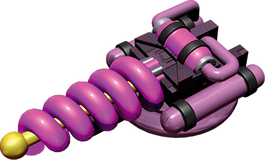
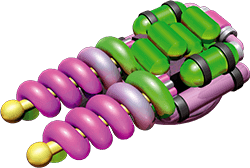
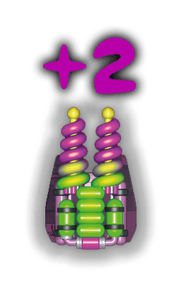
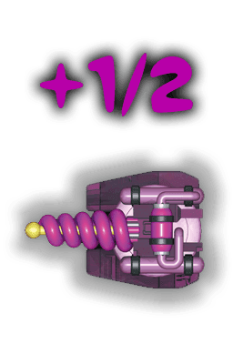
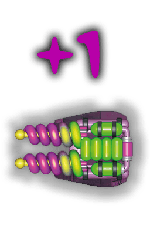

Cañones
Los cañones pueden apuntar en cualquier dirección, pero no admiten ninguna pieza en la casilla que hay inmediatamente delante de ellos. Cuando un cañón queda soldado, la casilla que hay justo delante se vuelve roja para indicar que no puede contener ningún componente.
Multitud de peligros te aguardan en tu viaje. Tendrás que enfrentarte a terribles enemigos, atravesar zonas de combate e incluso destruir grandes meteoritos. Es por ello que te recomendamos tener tantos cañones como sea posible. Si los colocas en el perímetro de la nave, aumentarás su eficacia.
Como regla general, siempre va bien que tus cañones apunten al frente. Sin embargo, es posible que un gran meteorito se acerque a la nave de costado o incluso por la parte trasera, así que tampoco te vendrán mal unos cuantos cañones que apunten en otra dirección. Todo cañón que no esté orientado hacia delante solo tiene la mitad de su potencia.
Cañones dobles
Los cañones dobles siguen las mismas normas de colocación que los cañones sencillos. Tienen el doble de potencia, pero para usarlos tendrás que gastar 1 e-pila  de tus baterías.
de tus baterías.

¡No te olvides de las baterías!
Potencia de cañones
Cuando te topes con un enemigo o atravieses una zona de combate, el juego te pedirá que especifiques tu potencia de cañones. Los cañones sencillos se activan automáticamente, por lo que no tendrás que hacer nada. Del mismo modo, las bonificaciones derivadas de los alienígenas de colo violeta también se aplicarán directamente. Podrás ver tu potencia de cañones actual junto al retrato de tu personaje.
A continuación tendrás que pulsar sobre una e-pila  por cada cañón doble que quieras activar. Si cambias de opinión pulsa sobre el cañón doble para que la energía que has utilizado en él vuelva a su batería. Una vez has decidido tu potencia de cañones definitiva, pulsa el icono
por cada cañón doble que quieras activar. Si cambias de opinión pulsa sobre el cañón doble para que la energía que has utilizado en él vuelva a su batería. Una vez has decidido tu potencia de cañones definitiva, pulsa el icono  para indicar que estás listo.
para indicar que estás listo.
Así se calcula tu potencia de cañones:

Cada cañón sencillo que apunta al frente cuenta como 1.

Cada cañón doble que apunta al frente en el que hayas gastado una e-pila  cuenta como 2.
cuenta como 2.
 Cada cañón que apunta al costado o hacia atrás solo aporta la mitad de su potencia:
1/2 si es un cañón sencillo…
Cada cañón que apunta al costado o hacia atrás solo aporta la mitad de su potencia:
1/2 si es un cañón sencillo…
 …o 1 si es un cañón doble en el que has gastado unae-pila
…o 1 si es un cañón doble en el que has gastado unae-pila  .
.
 Un alienígena violeta añade 2 a tu potencia de cañones, pero solo si dicha potencia es al menos de 1 sin el alien. Este señor es un profesional. No esperarás que defienda la nave a mordiscos, ¿verdad?
Un alienígena violeta añade 2 a tu potencia de cañones, pero solo si dicha potencia es al menos de 1 sin el alien. Este señor es un profesional. No esperarás que defienda la nave a mordiscos, ¿verdad?
Disparando contra meteoritos grandes
Puedes evitar que un meteorito grande impacte contra tu nave disparando un cañón orientado en esa misma dirección.
Si el meteorito se aproxima por la parte delantera de la nave, necesitarás un cañón en la columna que coincida con su trayectoria.
Si se aproxima por el costado, puedes dispararle con un cañón en esa misma fila o en una de las filas adyacentes.
Finalmente, si el meteorito se acerca por la parte trasera de la nave, tendrás que disparar contra él con un cañón en su misma columna o en una de las columnas adyacentes.
El juego disparará automáticamente contra cualquier meteorito que pueda ser destruido con un cañón sencillo. En caso de que el disparo tenga que realizarse con un cañón doble, se te ofrecerá la posibilidad de pulsar sobre una e-pila  para transferirle energía. De este modo, también tendrás la opción de guardar la energía para otro momento y dejar que tu nave reciba el golpe. (¡Auch!)
para transferirle energía. De este modo, también tendrás la opción de guardar la energía para otro momento y dejar que tu nave reciba el golpe. (¡Auch!)